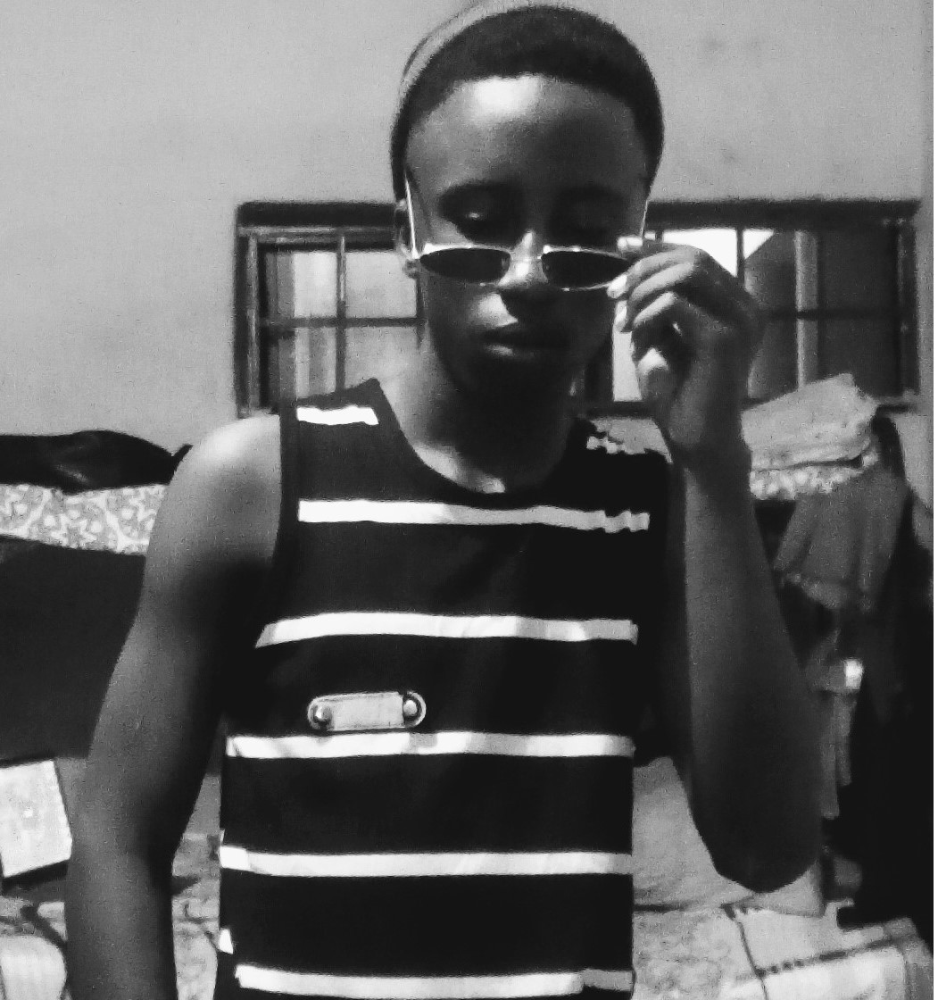

My Achievements
My Name is Layiwola Muhammad Mustapha, I am a 200 level Library and Information Science Student in KWARA State university, Malete.
Below are some of my greatest Achievements:
- I Have successfully completed my Secondary school and in doing so i have obtained my Secondary school leaving Certificate, I also wrote the Joint admissions and matriculation board's exam which is also known as JAMB exam, and i passed which enabled me to gain admission into the prestigious KWARA state University, Malete. I have also been able to Successfully pass through the first session or first year of my stay in KWASU which is also known as 100 level.
- I Have also been able to break a milestone by becoming the Richest Man alive, I have travelled to all the countries in the world, and i speak all known languages like; Spanish, english, arabic, portuguese, french, Swedish, Yoruba, Hausa, Igbo, Swahili, Afrikaan, Hebrew, Tapa, Fulani, Egba, Egun, Native Eskimo. and so on and forth, I will waste time if i were to name all of the languages that i can speak, you will probably sleep off or something.
- Another one of my many achievements is that i have been able to become the fastest man alive By beating Usain Bolt's world record. I finished a 200 meters race in two seconds, Everyone thought it impossible until I came along. I am considered a Record breaker wherever I go so the truth is My greatest hobby is Actually breaking records, Have a nice day.
Back to homepage
Myself
SendEmail
Call